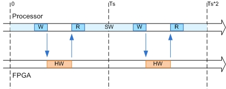

IP Core User Guide
Theory of OperationThis IP core is designed to be connected to an embedded processor with an AXI4 interface. The processor acts as master, and the IP core acts as slave. By accessing the generated registers via the AXI4 interface, the processor can control the IP core, and read and write data from and to the IP core.
For example, to reset the IP core, write 0x1 to the bit 0 of IPCore_Reset register. To enable or disable the IP core, write 0x1 or 0x0 to the IPCore_Enable register. To access the data ports of the MATLAB/Simulink algorithm, read or write to the associated data registers.

This IP core also support the External Port interface. To connect the external ports to the FPGA external IO pins, add FPGA pin assignment constraints in the Altera Qsys environment.
Processor/FPGA Synchronization
In Coprocessing - blocking mode, the IP core (HW) is generated with explicit blocking synchronization, so it causes embedded processor software execution (SW) to wait for the HW to finish. For example, as shown in the diagram below, for each SW sample, the processor first sends input data to the IP core. The processor then starts the IP core processing by writing 0x1 to the IPCore_Strobe register. The processor then polls the IPCore_Ready register to check whether IP Core has finished its processing. Once the processor reads a value of 0x1 from the IPCore_Ready register, the processor then reads the data out from the IP core.

Altera Qsys Environment Integration
This IP Core is generated for the Altera Qsys environment. The following steps are an example showing how to integrate the generated IP core into Altera Qsys environment:
1. Copy the IP core folder into the "ip" folder in your Altera Qsys project folder. If there is no folder named "ip", create one. This step adds the IP core into the Qsys project user library.
2. In the Qsys project, find the IP core in the user library and add the IP core to the design.
3. Connect the S_AXI port of the IP core to the embedded processor's AXI master port.
4. Connect the clock and reset ports of the IP core to the global clock and reset signals.
5. Assign a base address for the IP core.
6. Connect external ports and add FPGA pin assignment constraints.
7. Generate FPGA bitstream and download the bitstream to target device.
If you are targeting Intel SoC hardware supported by HDL Coder Support Package for Intel SoC Devices, you can select the board you are using in the Target platform option in the Set Target > Set Target Device and Synthesis Tool task. You can then use Embedded System Integration tasks in HDL Workflow Advisor to help you integrate the generated IP core into Altera Qsys environment.